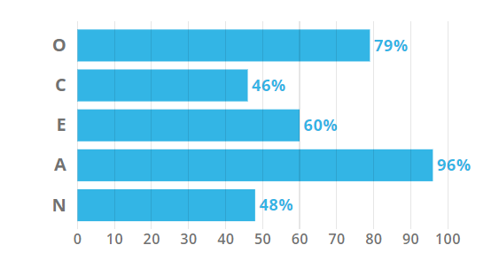

JARROD GREEN - PROFILE SITE
Personal Information
Name - Jarrod Green
Student Number - s3852499
Email Address - jarrodg113@gmail.com
Nationality - Australian
Education - High School Certificate
Language Spoken - English
Interesting Facts:
- I have a Pilot's Licence
- I enjoy soccer
- I work in TV
Interest in IT
Why IT?
I have an interest in IT because I like solving people's problems.
My mum owns a business and always comes up with ideas for apps and websites that she wishes someone could make for her.
It would be nice to be able to do that for her.
Why RMIT?
I decided to study at RMIT because I wanted to continue working full time while studying part time.
I do shift work on a very weird roster, so online study is pretty much my only option.
What do I expect to Learn?
I'm hoping to gain a good enough understanding of IT to get an IT job in my current workplace, and to pursue it as a hobby outside of work.
Ideal Job
Job Title
My ideal job is to be an IT Project Manager.
Description
Project Management is an especially appealing to me because I really enjoy working with people, I'm very motivated by deadlines and I love IT.
A successful Project Manager in any field must have exceptional people skills so as to motivate each individual team member.
They must have industry knowledge, and they must understand what criteria makes a Project a success, and what makes it a failure.
These criteria include deadlines, costs, goal achievement, and some others.
An IT Project Manager must have relevant experience and skill in that specific IT field.
They don't necessarily have to be qualified, although they generally are.
Lacking the relevant qualification only makes everything harder.
All of these points are why I'm studying this course; so that I can get an IT job so as to get the experience required to become a good IT Project Manager.
Personal Profile
Myers-Briggs - "The Mediator" (INFP)
When I first saw this result, all I thought was "That is bang on!".
I've been told multiple times that I'm good at defusing situations, and I'm always trying to find the positive in any situation.
I always think, any situation can be a good one or a bad one, it just depends on how you decide to look at it.
I think these results make me a valuable asset to a team. I'm able to come into any situation, and work with pretty much any personality type.
I love trying to resolve or defuse situations, and I enjoy listening to people, which I believe to be a skill that people can be either good or bad at.
When forming a team, I know that I can work with anyone, and can help people to work with each other.
That means I should focus on working with highly skilled people, as I can take care of the work atmosphere.
Learning Style - Tactile
As a Tactile learner, I learn by doing. If I don't get the chance to actually practise something, I'll either be bad at it, or really nervous about it.
When operating in a team, I have to keep in mind that I'll find it hard to do something unless I'm given the chance to do it.
This will make it hard to be given instruction and do something, or look at a chart then do something.
It's important to tell people that I'm working with that I need to do things to learn them.
It's actually important for all team members to share their learning styles, or team members could get frustrated at other members not performing well.
Creativity Test -

As a generally agreeable person, I have to be careful that I'm not being a pushover.
In a team, I'm generally fine with whatever plan we come up with, and I'll work hard at whatever it is.
I just need a clear picture.
This doesn't present much of an issue when forming a team, although it's good to keep in mind which people are likely to try and control me.
Project Idea - GigList
Motivation
I’m a Bass Guitar player.
It’s not the most exciting instrument in any band, but without it, the band can’t put any power into their songs.
I’m not there to be the heroic frontman with massive solos, I’m there to support and make everyone else sound better.
And I absolutely love doing it.
Another way I could support my band is to design an app for them.
The band already uses iPads with photos of the sheet music on them.
However we often decide to skip songs and go back to them and mess around the order.
This can result in band members flicking through photos, desperately trying to find a song, and causing large gaps between songs.
This is unprofessional and plain awkward when it happens.
Overview
This is a problem. Luckily, the IT industry is based solely on the premise of problem solving.
My project proposal is an app called GigList.
GigList is an app which provides a simple solution to the everlasting issue of “flicking through sheet music”.
This is an issue in all music groups, from bands to orchestras, which is frustrating enough in practise, let alone during performances.
The app will allow users to set up “Gigs”, which are a collection of songs that are played for certain performances.
It will use each Gig to create a content list, allowing users to switch between songs with two touches, regardless of how far apart these songs were planned to be.
Description
The app will work as follows.
The landing screen will have a “Group Selection” interface.
This will allow users that are members of multiple music groups to select the relevant group.
This avoids having too much unnecessary content showing at any one time.
Once the music group is selected, the user will be brought to the main menu of that group.
This menu will include a “Create Gig” option, a “Preset Gigs” option, the “Music Catalog” relevant to that group.
The user can then create a new Gig, select the gig they need at that time, or access the music catalog to add or delete music as required.
The Create Gig option will bring up an interface that allows users to create and sort a new Gig.
This allows them to put music in the right order, and differentiate between performances, helping prevent wasting time by flicking through pages of music.
Additionally, the user can create multiple sets within a preset Gig, which act like folders for that Gig.
This is a commonly used system amongst musicians, so it will not be an unfamiliar system.
The Create Gig option will bring up an interface that allows users to create and sort a new Gig.
This allows them to put music in the right order, and differentiate between performances, helping prevent wasting time by flicking through pages of music.
Additionally, the user can create multiple sets within a preset Gig, which act like folders for that Gig.
This is a commonly used system amongst musicians, so it will not be an unfamiliar system.
The music catalog is the final section of the main menu.
It is essentially a photo album of sheet music.
It will have song titles watermarked at the bottom of each sheet.
This music catalog allows the user to add and delete songs as required, from the device’s native photo app, or from a pdf storage app.
Some users will have bought temporary licences for sheet music.
So it’s important to allow the user to delete music once they no longer need it, or are no longer legally allowed to have any copies.
The catalog will, as mentioned, be able to store PDFs as sheet music.
It will contain a pdf converter that converts pdfs into photos to allow use on GigList.
This will make using the app smoother, as it won’t have to have photos and pdfs on hand for use in the same display.
Tools and Tech
Users will require a tablet.
A phone would work but would not be recommended due to screen size.
Apps will be available for both iOS and Android, so any tablet will suffice.
Due to the prolonged nature of the apps use (ie. performance can go for many hours), a portable charger would be recommended via a pop up message upon first use of the app.
Manufacturing of portable chargers is not planned, however there would naturally be potential for partnership with a company that does this.
There would also be potential for partnership with sheet music companies such as CCLI, musicnotes.com, Sheet Music Plus, Ultimate Guitar, etc.
Skills Required
It wouldn’t be an enormous undertaking to create this app, as it’s a relatively simple idea.
There are solutions for the issue of programming an app for iOS and Android, other than creating two separate apps that only “kind of” look the same.
These include React Native, Xamarin, and others.
It wouldn’t even require a team to create, just a competent and motivated developer with knowledge and experience in the music industry.
Outcome
The desired outcome of the project is to be selling an app on both the iOS app store, and the Google Play app store.
As it is a very simple app it would be quite cheap.
It would have an available free trial period, and potentially a free version with ads (although this option hasn’t been thought through comprehensively yet).
It would provide a simple solution to a problem musicians have had for, quite literally, hundreds of years.
It would make for smoother transitions between songs, allowing bands to “keep up the energy” throughout performances.
And at the end of the day, that benefits everyone.
-----------------------------------------------------------------------------------------------------------------------------------------
References
16Personalities. 2020. Introduction | Mediator (INFP) Personality | 16Personalities. [online] Available at: [Accessed 22 March 2020].
Educationplanner.org. 2020. What's Your Learning Style? 20 Questions. [online] Available at: [Accessed 22 March 2020].
O’Quinn, L. and O’Quinn, L., 2020. Project Success Criteria Examples - Blog | Planview. [online] Planview Blog. Available at: [Accessed 22 March 2020].